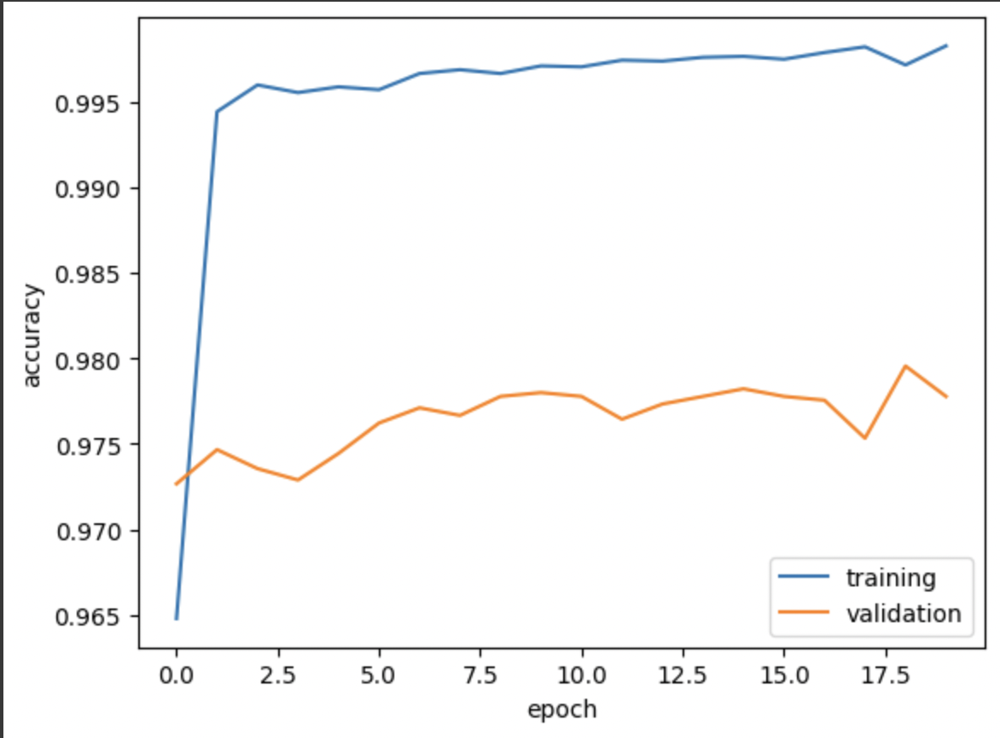

HW6: Fake News Classification
In this homework, we are going to create a fake news classifier with Keras.
First, we will import the necessary libraries.
import os
os.environ["KERAS_BACKEND"] = "tensorflow"
import tensorflow as tf
import re
import string
import keras
from keras import layers, losses
from keras.layers import TextVectorization
from sklearn.model_selection import train_test_split
from sklearn.preprocessing import LabelEncoder
# for embedding viz
import plotly.express as px
import plotly.io as pio
pio.templates.default = "plotly_white"
from nltk.corpus import stopwords
import nltk
nltk.download('stopwords')Acquire training data
The data that we will use to train the model can be found at the link below. We will read the data into a pandas dataframe.
train_url = "https://github.com/PhilChodrow/PIC16b/blob/master/datasets/fake_news_train.csv?raw=true"
train_data = pd.read_csv(train_url)
train_dataWe see that this dataset contains information about 22449 articles. Each row of the data corresponds to an article. The title column gives the title of the article, while the text column gives the full article text. The final column, called fake, is 0 if the article is true and 1 if the article contains fake news, as determined by the authors of the paper above.
Create a dataset
Next, let’s write the function make_dataset to convert the data to a tensorflow dataset.
batch_size = 100
def make_dataset(df):
# Load stopwords from NLTK
stop_words = stopwords.words('english')
# remove stopwords
df['title'] = df['title'].str.lower().apply(lambda x: ' '.join([word for word in x.split() if word not in stop_words]))
df['text'] = df['text'].str.lower().apply(lambda x: ' '.join([word for word in x.split() if word not in stop_words]))
# Construct a tf.data.Dataset
# Note: Ensure your DataFrame has columns named 'title', 'text', and 'fake' for this to work directly
dataset = tf.data.Dataset.from_tensor_slices(
(
{
"title": df['title'].values, # Pass series.values to get numpy representation
"text": df['text'].values
},
df['fake'].values
)
)
# Batch the dataset
dataset = dataset.batch(batch_size)
return dataset
data = make_dataset(train_data)Now let’s split our data into training and validation sets. We will use 20% for validation. Again, we will batch the data so it will train more efficiently.
data = data.shuffle(buffer_size = len(data), reshuffle_each_iteration=False)
train_size = int(0.8 * len(data)) # allocate 80% of data for training
train = data.take(train_size) # set training data
val = data.skip(train_size) # set validation data# check the size of training, validation, testing set
len(train), len(val)(180, 45)Here we see that the training data is four times larger than the validation data, which is what we expect.
Text Vectorization
In the code below, we standardize the the data by turning all text to lowercase and removing punctuation. We also vectorize the text through creating a text vectorization layer.
#preparing a text vectorization layer for tf model
size_vocabulary = 2000
def standardization(input_data):
lowercase = tf.strings.lower(input_data)
no_punctuation = tf.strings.regex_replace(lowercase,
'[%s]' % re.escape(string.punctuation),'')
return no_punctuation
title_vectorize_layer = TextVectorization(
standardize=standardization,
max_tokens=size_vocabulary, # only consider this many words
output_mode='int',
output_sequence_length=500)
title_vectorize_layer.adapt(train.map(lambda x, y: x["title"]))# Define the shared embedding layer
embedding_layer = layers.Embedding(size_vocabulary, 20, name = "embedding")
# Define the input layers
title_input = keras.Input(
shape = (1,),
# name for us to remember for later
name = "title",
# type of data contained
dtype = "string"
)
text_input = keras.Input(
shape = (1,),
name = "text",
dtype = "string"
)Create models
Model 1: Only using article title as input
The first model will determine whether an article contains fake news or not solely based on its title. To do so, we will use the functional API of TensorFlow. We will define a pipeline of hidden layers to process the titles. First, we explicitly define an embedding layer. This is so we can reuse it in a later model. Then we define different layers for the text data. The dropout layers prevent overfitting.
# Model 1: Only article title as input
title_features = title_vectorize_layer(title_input)
title_features = embedding_layer(title_features)
title_features = layers.Dropout(0.2)(title_features)
title_features = layers.GlobalAveragePooling1D()(title_features)
title_features = layers.Dropout(0.2)(title_features)
title_features = layers.Dense(32, activation='relu')(title_features)
title_output = layers.Dense(2,name='fake')(title_features)
model_title = keras.Model(
inputs = title_input,
outputs = title_output
)
model_title.compile(optimizer = "adam",
loss = losses.SparseCategoricalCrossentropy(from_logits=True),
metrics=['accuracy']
)history_title = model_title.fit(train,
validation_data=val,
epochs = 20)Epoch 1/20
/usr/local/lib/python3.10/dist-packages/keras/src/engine/functional.py:642: UserWarning: Input dict contained keys ['text'] which did not match any model input. They will be ignored by the model.
inputs = self._flatten_to_reference_inputs(inputs)
180/180 [==============================] - 13s 68ms/step - loss: 0.6915 - accuracy: 0.5247 - val_loss: 0.6897 - val_accuracy: 0.5227
Epoch 2/20
180/180 [==============================] - 1s 6ms/step - loss: 0.6794 - accuracy: 0.5882 - val_loss: 0.6509 - val_accuracy: 0.6702
Epoch 3/20
180/180 [==============================] - 1s 5ms/step - loss: 0.5618 - accuracy: 0.7883 - val_loss: 0.4337 - val_accuracy: 0.8713
Epoch 4/20
180/180 [==============================] - 1s 5ms/step - loss: 0.3614 - accuracy: 0.8743 - val_loss: 0.2885 - val_accuracy: 0.8998
Epoch 5/20
180/180 [==============================] - 1s 6ms/step - loss: 0.2610 - accuracy: 0.9046 - val_loss: 0.2261 - val_accuracy: 0.9140
Epoch 6/20
180/180 [==============================] - 1s 6ms/step - loss: 0.2151 - accuracy: 0.9202 - val_loss: 0.1936 - val_accuracy: 0.9240
Epoch 7/20
180/180 [==============================] - 1s 6ms/step - loss: 0.1854 - accuracy: 0.9296 - val_loss: 0.1745 - val_accuracy: 0.9304
Epoch 8/20
180/180 [==============================] - 1s 5ms/step - loss: 0.1670 - accuracy: 0.9356 - val_loss: 0.1630 - val_accuracy: 0.9351
Epoch 9/20
180/180 [==============================] - 1s 6ms/step - loss: 0.1555 - accuracy: 0.9401 - val_loss: 0.1536 - val_accuracy: 0.9396
Epoch 10/20
180/180 [==============================] - 1s 7ms/step - loss: 0.1447 - accuracy: 0.9444 - val_loss: 0.1477 - val_accuracy: 0.9429
Epoch 11/20
180/180 [==============================] - 1s 8ms/step - loss: 0.1378 - accuracy: 0.9467 - val_loss: 0.1440 - val_accuracy: 0.9429
Epoch 12/20
180/180 [==============================] - 1s 5ms/step - loss: 0.1319 - accuracy: 0.9484 - val_loss: 0.1417 - val_accuracy: 0.9438
Epoch 13/20
180/180 [==============================] - 1s 6ms/step - loss: 0.1265 - accuracy: 0.9504 - val_loss: 0.1399 - val_accuracy: 0.9440
Epoch 14/20
180/180 [==============================] - 1s 6ms/step - loss: 0.1228 - accuracy: 0.9522 - val_loss: 0.1377 - val_accuracy: 0.9458
Epoch 15/20
180/180 [==============================] - 1s 5ms/step - loss: 0.1183 - accuracy: 0.9545 - val_loss: 0.1368 - val_accuracy: 0.9464
Epoch 16/20
180/180 [==============================] - 1s 5ms/step - loss: 0.1153 - accuracy: 0.9559 - val_loss: 0.1373 - val_accuracy: 0.9449
Epoch 17/20
180/180 [==============================] - 1s 5ms/step - loss: 0.1129 - accuracy: 0.9570 - val_loss: 0.1361 - val_accuracy: 0.9469
Epoch 18/20
180/180 [==============================] - 1s 6ms/step - loss: 0.1110 - accuracy: 0.9567 - val_loss: 0.1361 - val_accuracy: 0.9484
Epoch 19/20
180/180 [==============================] - 1s 6ms/step - loss: 0.1086 - accuracy: 0.9584 - val_loss: 0.1370 - val_accuracy: 0.9478
Epoch 20/20
180/180 [==============================] - 2s 8ms/step - loss: 0.1068 - accuracy: 0.9594 - val_loss: 0.1367 - val_accuracy: 0.9489plt.plot(history_title.history["accuracy"], label = "training")
plt.plot(history_title.history["val_accuracy"], label = "validation")
plt.gca().set(xlabel = "epoch", ylabel = "accuracy")
plt.legend()We can see that the model achieves around 94% validation accuracy. The training and validation data appear to have similar accuracy, which indicates we did not overfit the model.
Model 2: Only using articles text as input
We follow the same procedure as the first model to determine whether an article contains fake news or not solely based on its text.
# Model 2: Only article text as input
text_features = title_vectorize_layer(text_input)
text_features = embedding_layer(text_features)
text_features = layers.Dropout(0.2)(text_features)
text_features = layers.GlobalAveragePooling1D()(text_features)
text_features = layers.Dropout(0.2)(text_features)
text_features = layers.Dense(32, activation='relu')(text_features)
text_output = layers.Dense(2,name='fake')(text_features)
model_text = keras.Model(
inputs = text_input,
outputs = text_output
)
model_text.compile(optimizer = "adam",
loss = losses.SparseCategoricalCrossentropy(from_logits=True),
metrics=['accuracy']
)history_text = model_text.fit(train,
validation_data=val,
epochs = 20)Epoch 1/20
180/180 [==============================] - 11s 54ms/step - loss: 0.4063 - accuracy: 0.9445 - val_loss: 0.1904 - val_accuracy: 0.9700
Epoch 2/20
180/180 [==============================] - 2s 11ms/step - loss: 0.1296 - accuracy: 0.9744 - val_loss: 0.1168 - val_accuracy: 0.9713
Epoch 3/20
180/180 [==============================] - 2s 11ms/step - loss: 0.0816 - accuracy: 0.9815 - val_loss: 0.1017 - val_accuracy: 0.9704
Epoch 4/20
180/180 [==============================] - 2s 11ms/step - loss: 0.0629 - accuracy: 0.9865 - val_loss: 0.0979 - val_accuracy: 0.9702
Epoch 5/20
180/180 [==============================] - 3s 15ms/step - loss: 0.0523 - accuracy: 0.9880 - val_loss: 0.0977 - val_accuracy: 0.9698
Epoch 6/20
180/180 [==============================] - 2s 11ms/step - loss: 0.0453 - accuracy: 0.9895 - val_loss: 0.1008 - val_accuracy: 0.9700
Epoch 7/20
180/180 [==============================] - 2s 11ms/step - loss: 0.0409 - accuracy: 0.9908 - val_loss: 0.1031 - val_accuracy: 0.9691
Epoch 8/20
180/180 [==============================] - 2s 11ms/step - loss: 0.0372 - accuracy: 0.9913 - val_loss: 0.1067 - val_accuracy: 0.9691
Epoch 9/20
180/180 [==============================] - 2s 11ms/step - loss: 0.0351 - accuracy: 0.9925 - val_loss: 0.1086 - val_accuracy: 0.9700
Epoch 10/20
180/180 [==============================] - 3s 15ms/step - loss: 0.0321 - accuracy: 0.9933 - val_loss: 0.1115 - val_accuracy: 0.9698
Epoch 11/20
180/180 [==============================] - 2s 11ms/step - loss: 0.0313 - accuracy: 0.9931 - val_loss: 0.1141 - val_accuracy: 0.9711
Epoch 12/20
180/180 [==============================] - 2s 11ms/step - loss: 0.0294 - accuracy: 0.9935 - val_loss: 0.1177 - val_accuracy: 0.9696
Epoch 13/20
180/180 [==============================] - 2s 11ms/step - loss: 0.0279 - accuracy: 0.9938 - val_loss: 0.1190 - val_accuracy: 0.9704
Epoch 14/20
180/180 [==============================] - 2s 11ms/step - loss: 0.0273 - accuracy: 0.9937 - val_loss: 0.1211 - val_accuracy: 0.9693
Epoch 15/20
180/180 [==============================] - 3s 15ms/step - loss: 0.0254 - accuracy: 0.9943 - val_loss: 0.1219 - val_accuracy: 0.9713
Epoch 16/20
180/180 [==============================] - 2s 11ms/step - loss: 0.0248 - accuracy: 0.9942 - val_loss: 0.1260 - val_accuracy: 0.9713
Epoch 17/20
180/180 [==============================] - 2s 12ms/step - loss: 0.0249 - accuracy: 0.9946 - val_loss: 0.1266 - val_accuracy: 0.9709
Epoch 18/20
180/180 [==============================] - 2s 11ms/step - loss: 0.0235 - accuracy: 0.9948 - val_loss: 0.1299 - val_accuracy: 0.9704
Epoch 19/20
180/180 [==============================] - 2s 11ms/step - loss: 0.0228 - accuracy: 0.9941 - val_loss: 0.1310 - val_accuracy: 0.9709
Epoch 20/20
180/180 [==============================] - 2s 13ms/step - loss: 0.0217 - accuracy: 0.9952 - val_loss: 0.1326 - val_accuracy: 0.9716plt.plot(history_text.history["accuracy"], label = "training")
plt.plot(history_text.history["val_accuracy"], label = "validation")
plt.gca().set(xlabel = "epoch", ylabel = "accuracy")
plt.legend()We can see that the model achieves around 97% validation accuracy. We observe a bit of overfitting as the training data is about 0.2 more than the validation data.
Model 3: Using both the article title and the article text as input
In the last model, we will use both the title and text of the article to determine whether the article contains fake news. Since we have already defined the layers for title_features and text_features, we can combine them to create our new model.
main = layers.concatenate([title_features, text_features], axis = 1) # combine the layers of title and text
main = layers.Dense(32, activation = 'relu')(main)
output = layers.Dense(2, name = "fake")(main)
model = keras.Model(
inputs = [title_input, text_input],
outputs = output
)
model.compile(optimizer = "adam",
loss = losses.SparseCategoricalCrossentropy(from_logits=True),
metrics=['accuracy']
)history = model.fit(train,
validation_data=val,
epochs = 20)Epoch 1/20
180/180 [==============================] - 15s 71ms/step - loss: 0.1109 - accuracy: 0.9648 - val_loss: 0.1008 - val_accuracy: 0.9727
Epoch 2/20
180/180 [==============================] - 2s 13ms/step - loss: 0.0185 - accuracy: 0.9944 - val_loss: 0.0978 - val_accuracy: 0.9747
Epoch 3/20
180/180 [==============================] - 2s 13ms/step - loss: 0.0150 - accuracy: 0.9960 - val_loss: 0.1065 - val_accuracy: 0.9736
Epoch 4/20
180/180 [==============================] - 2s 13ms/step - loss: 0.0156 - accuracy: 0.9955 - val_loss: 0.1081 - val_accuracy: 0.9729
Epoch 5/20
180/180 [==============================] - 2s 12ms/step - loss: 0.0140 - accuracy: 0.9959 - val_loss: 0.1007 - val_accuracy: 0.9744
Epoch 6/20
180/180 [==============================] - 3s 17ms/step - loss: 0.0132 - accuracy: 0.9957 - val_loss: 0.0988 - val_accuracy: 0.9762
Epoch 7/20
180/180 [==============================] - 2s 13ms/step - loss: 0.0119 - accuracy: 0.9967 - val_loss: 0.1010 - val_accuracy: 0.9771
Epoch 8/20
180/180 [==============================] - 2s 13ms/step - loss: 0.0119 - accuracy: 0.9969 - val_loss: 0.0934 - val_accuracy: 0.9767
Epoch 9/20
180/180 [==============================] - 3s 14ms/step - loss: 0.0113 - accuracy: 0.9967 - val_loss: 0.0920 - val_accuracy: 0.9778
Epoch 10/20
180/180 [==============================] - 2s 13ms/step - loss: 0.0108 - accuracy: 0.9971 - val_loss: 0.0909 - val_accuracy: 0.9780
Epoch 11/20
180/180 [==============================] - 2s 13ms/step - loss: 0.0101 - accuracy: 0.9970 - val_loss: 0.0878 - val_accuracy: 0.9778
Epoch 12/20
180/180 [==============================] - 2s 13ms/step - loss: 0.0092 - accuracy: 0.9974 - val_loss: 0.0941 - val_accuracy: 0.9764
Epoch 13/20
180/180 [==============================] - 3s 16ms/step - loss: 0.0091 - accuracy: 0.9974 - val_loss: 0.0945 - val_accuracy: 0.9773
Epoch 14/20
180/180 [==============================] - 3s 14ms/step - loss: 0.0084 - accuracy: 0.9976 - val_loss: 0.0940 - val_accuracy: 0.9778
Epoch 15/20
180/180 [==============================] - 2s 13ms/step - loss: 0.0082 - accuracy: 0.9977 - val_loss: 0.0892 - val_accuracy: 0.9782
Epoch 16/20
180/180 [==============================] - 3s 14ms/step - loss: 0.0082 - accuracy: 0.9975 - val_loss: 0.0917 - val_accuracy: 0.9778
Epoch 17/20
180/180 [==============================] - 2s 13ms/step - loss: 0.0072 - accuracy: 0.9979 - val_loss: 0.0984 - val_accuracy: 0.9776
Epoch 18/20
180/180 [==============================] - 3s 17ms/step - loss: 0.0066 - accuracy: 0.9982 - val_loss: 0.1054 - val_accuracy: 0.9753
Epoch 19/20
180/180 [==============================] - 2s 13ms/step - loss: 0.0081 - accuracy: 0.9972 - val_loss: 0.0885 - val_accuracy: 0.9796
Epoch 20/20
180/180 [==============================] - 2s 13ms/step - loss: 0.0066 - accuracy: 0.9983 - val_loss: 0.0948 - val_accuracy: 0.9778plt.plot(history.history["accuracy"], label = "training")
plt.plot(history.history["val_accuracy"], label = "validation")
plt.gca().set(xlabel = "epoch", ylabel = "accuracy")
plt.legend() We can see that the model achieves around 99% validation accuracy. The training and validation data appear to have similar accuracy, which indicates we did not overfit the model.
Model evaluation
We can test out our model on unseen test data. The code below shows we have achieved 97.46% accuracy on the test data!
test_url = "https://github.com/PhilChodrow/PIC16b/blob/master/datasets/fake_news_test.csv?raw=true"
test_data = pd.read_csv(test_url)
test = make_dataset(test_data)
model.evaluate(test)225/225 [==============================] - 2s 9ms/step - loss: 0.1169 - accuracy: 0.9746
[0.1169150322675705, 0.9746091365814209]Embedding Visualization
We can use plotly to create an interactive plot to see how the words are related to each other. The words that the model associates with fake news will tend towards one side and the words that the model associates with real news will be on the other.
weights = model.get_layer('embedding').get_weights()[0] # get the weights from the embedding layer
vocab = title_vectorize_layer.get_vocabulary() # get the vocabulary from our data prep for later
from sklearn.decomposition import PCA
pca = PCA(n_components=2)
weights = pca.fit_transform(weights)
embedding_df = pd.DataFrame({
'word' : vocab,
'x0' : weights[:,0],
'x1' : weights[:,1]
})import plotly.express as px
fig = px.scatter(embedding_df,
x = "x0",
y = "x1",
size = list(np.ones(len(embedding_df))),
size_max = 3,
hover_name = "word")
fig.show()On the far left we can see words such as “trumps”, “obamas”, as well as country names such as “chinas”, “koreas”. On the right there are words such as “shocking”, “reportedly”, “insane”.